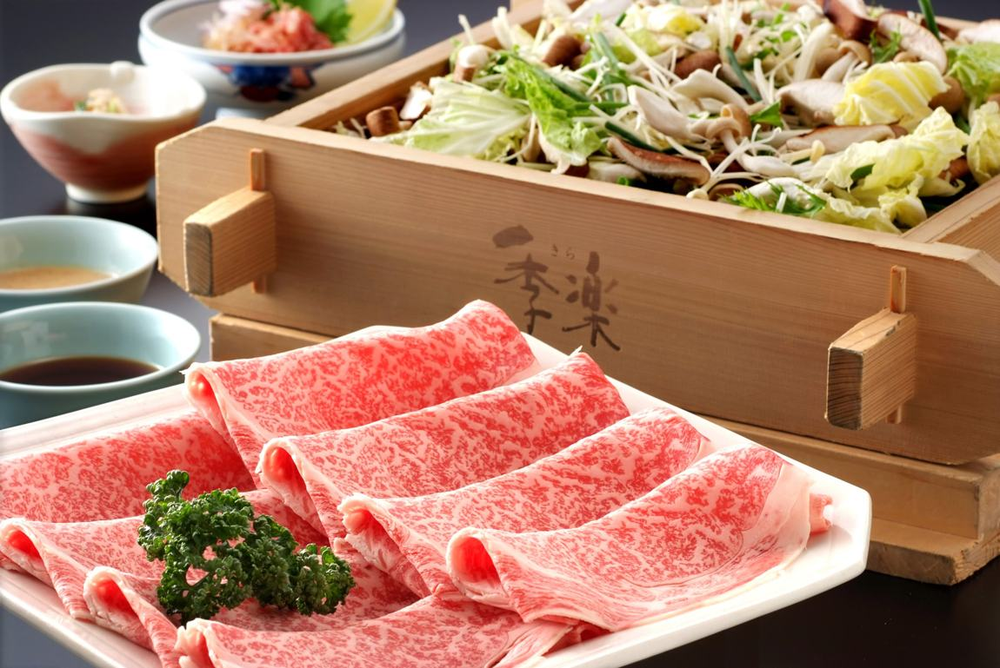
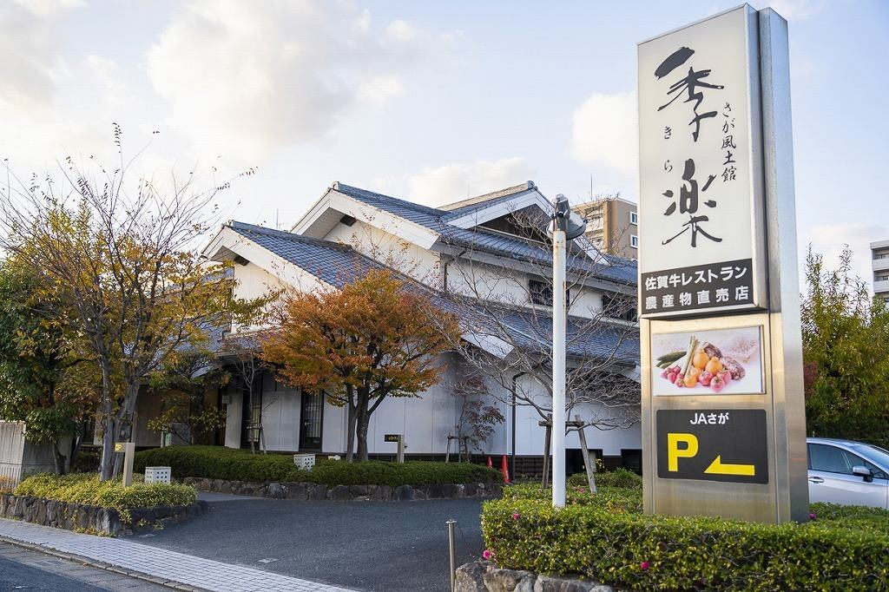
| 営業時間 | 11:00〜15:00（オーダーストップ14:00）／17:00〜22:00（オーダーストップ21:00） |
|---|---|
| 定休日 | 第二水曜日（予告なく変更になる場合あり） |
| 住所 | 佐賀県佐賀市大財3丁目9-16 |
| 予約 | 予約可。電話0952-28-4132（フリーダイヤル0120-297-132）か公式サイトのネット予約。個室は大人4名以上から。鉄板カウンターの網焼きステーキランチは要予約。食物アレルギーは予約時に申告 — ☎ 0952-28-4132 ／ 公式サイト |
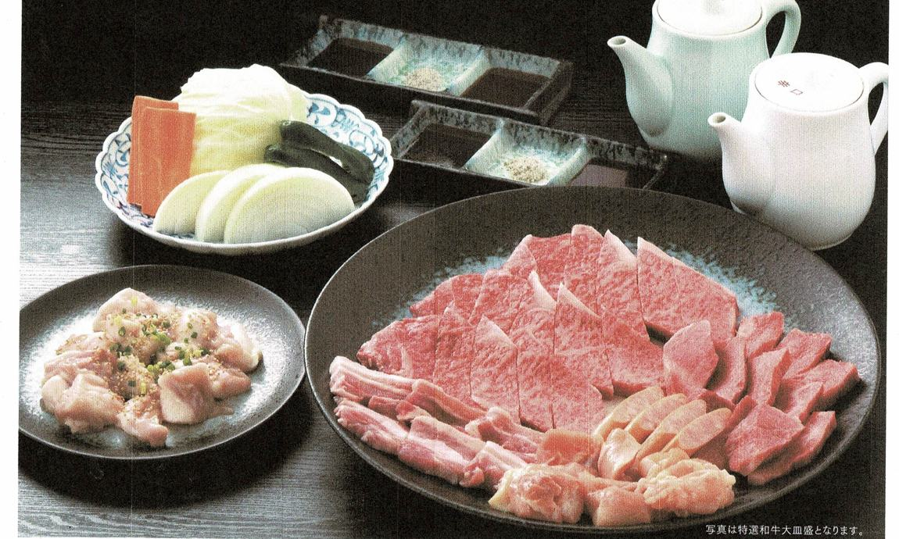
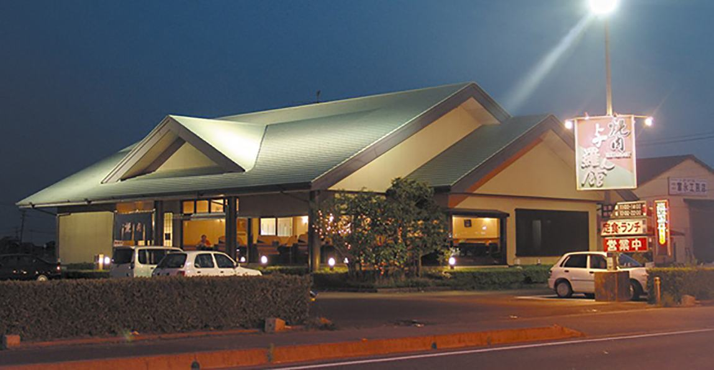
| 営業時間 | 11:00〜14:30（オーダーストップ14:00）／17:00〜22:00（オーダーストップ21:00） |
|---|---|
| 定休日 | 第三火曜日（異なる場合あり） |
| 住所 | 佐賀県佐賀市久保田町大字久富3983-3 |
| 予約 | ランチは予約を受け付けていない。ディナーのみ予約可で、電話0952-68-4777か公式サイトのネット予約 — ☎ 0952-68-4777 ／ 公式サイト |
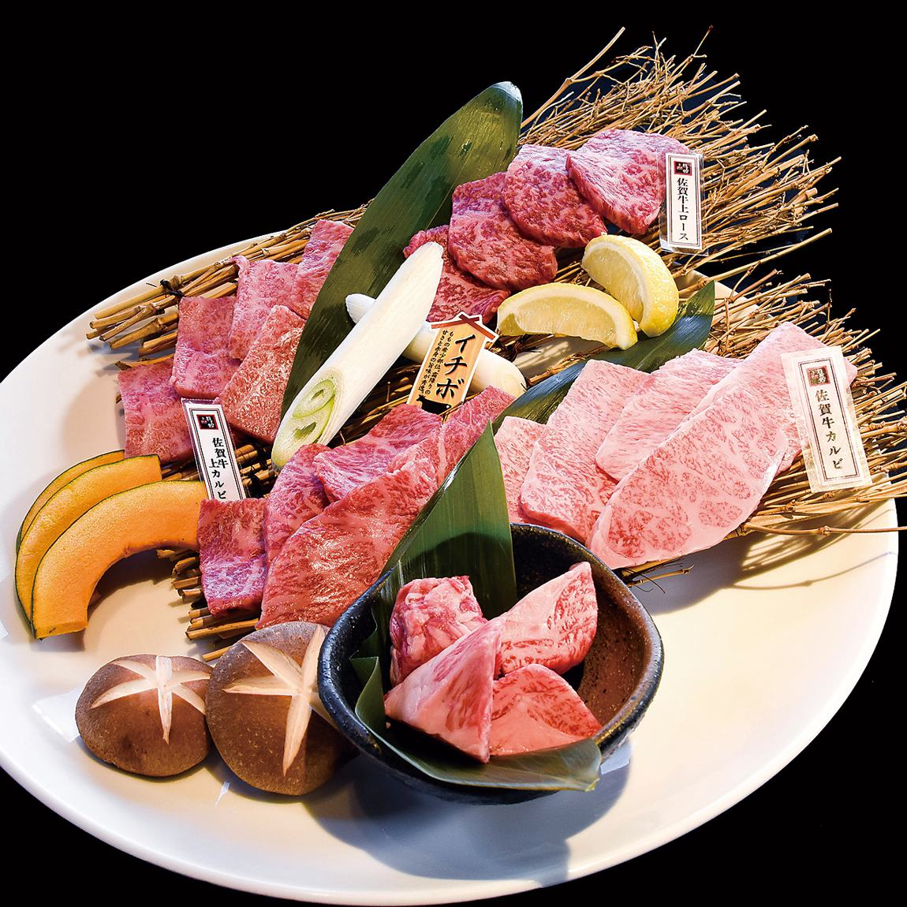
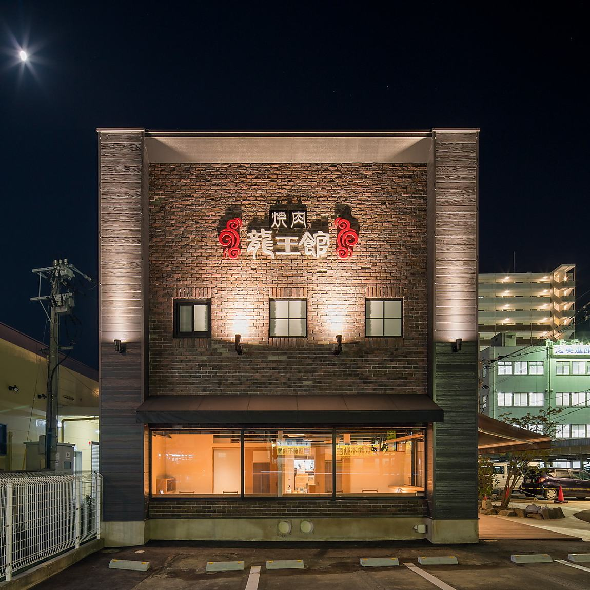
| 営業時間 | 月〜金 17:00〜23:00（料理L.O.22:00・ドリンクL.O.22:45）／土 16:00〜23:00（同）／日・祝 16:00〜22:00（料理L.O.21:30・ドリンクL.O.21:45） |
|---|---|
| 定休日 | なし |
| 住所 | 佐賀県佐賀市愛敬町11-10 |
| 予約 | 予約可。電話0952-97-5929、またはホットペッパーグルメのネット予約（即予約は来店日当日20時まで、リクエスト予約は前日17時まで） — ☎ 0952-97-5929 ／ 公式サイト |
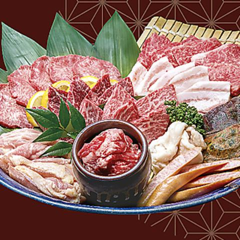
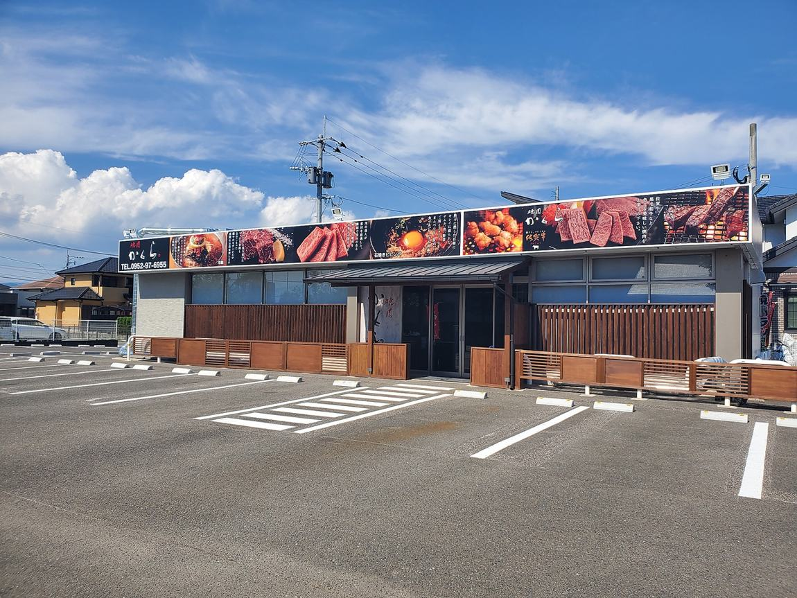
| 営業時間 | 月〜金・祝前日 11:30〜15:00（L.O.14:30）／17:00〜23:00（L.O.22:30）、土・日・祝 11:30〜23:00（L.O.22:30） |
|---|---|
| 定休日 | なし |
| 住所 | 佐賀県佐賀市兵庫北2-25-18 |
| 予約 | 予約可。電話0952-97-6955（問い合わせは11:00〜）、またはホットペッパーグルメのネット予約（即予約は来店日当日21時まで、リクエスト予約は前日17時まで） — ☎ 0952-97-6955 |
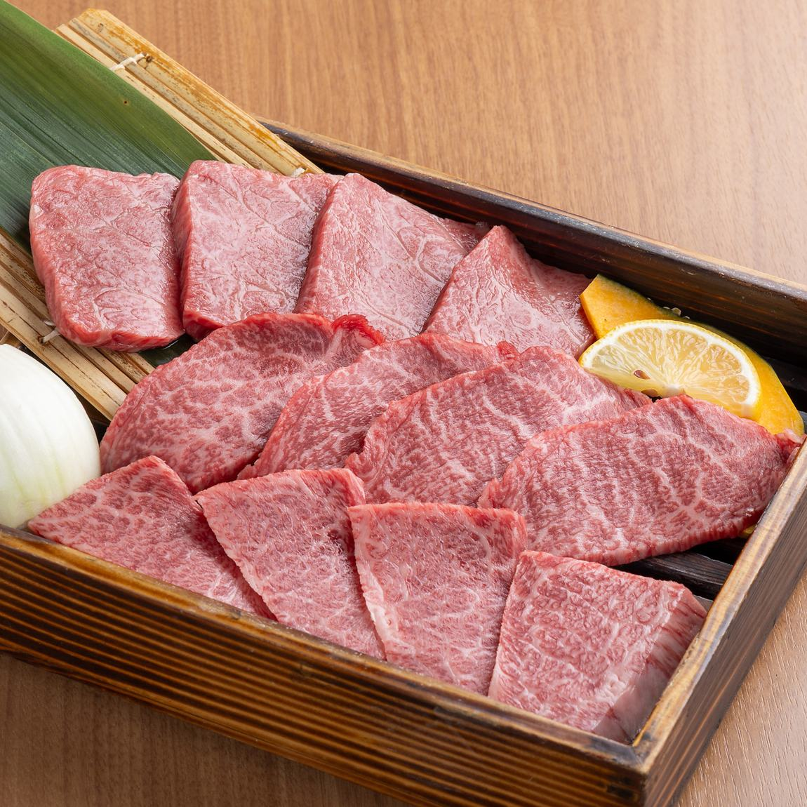
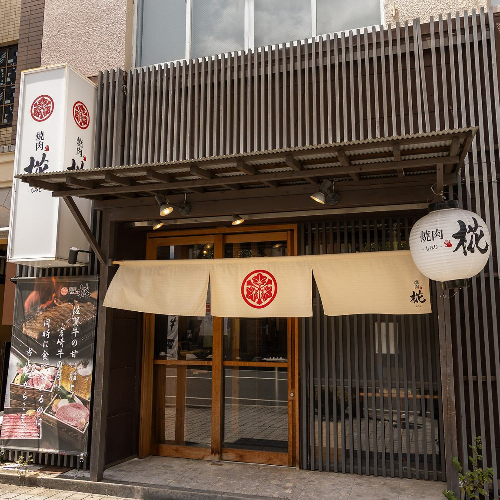
| 営業時間 | 月〜日 11:00〜15:00（L.O.14:30）／17:00〜22:30（L.O.22:00） |
|---|---|
| 定休日 | 不定休 |
| 住所 | 佐賀県佐賀市唐人1丁目5-37 |
| 予約 | 予約可。電話0952-37-1129（営業時間内）、またはホットペッパーグルメのネット予約（即予約は来店日当日17時まで、リクエスト予約は前日17時まで）。コースは当日16時以降のキャンセルで100％のキャンセル料 — ☎ 0952-37-1129 |
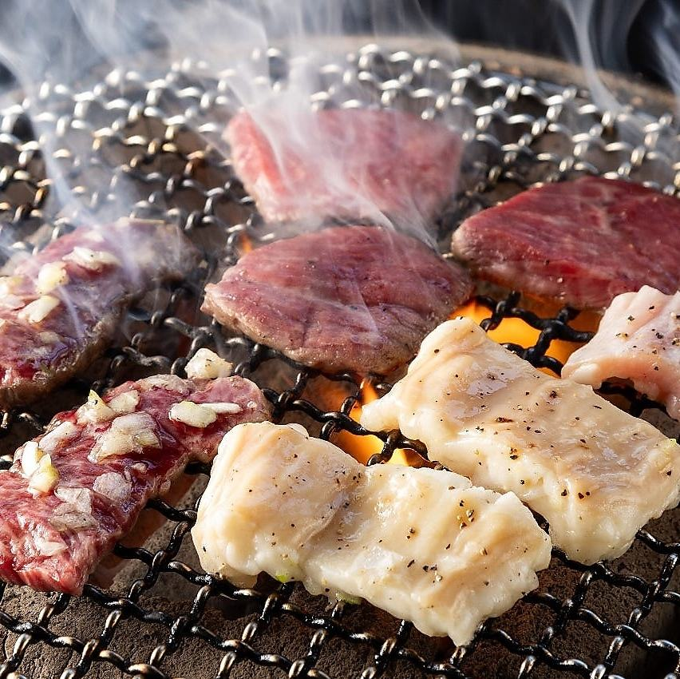
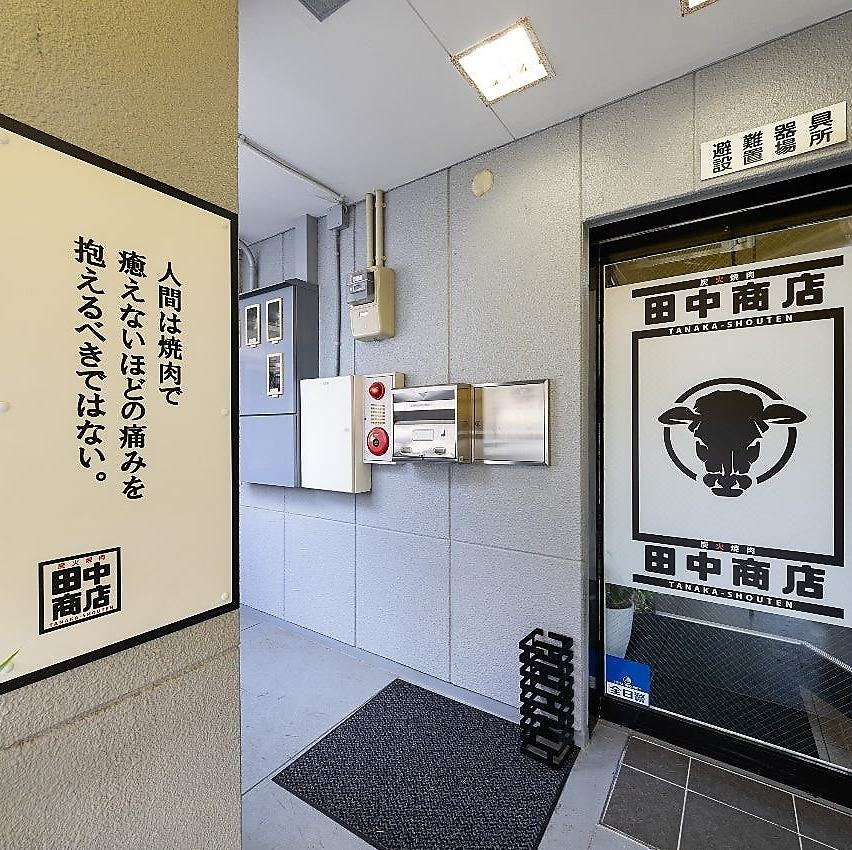
| 営業時間 | 月〜日 17:00〜翌0:00（料理L.O.23:00・ドリンクL.O.23:00） |
|---|---|
| 定休日 | なし |
| 住所 | 佐賀県佐賀市駅南本町3-8 草場ビル2階 |
| 予約 | 予約可。電話050-8888-1239、またはホットペッパーグルメのネット予約（即予約は来店日当日18時まで） — ☎ 050-8888-1239 |
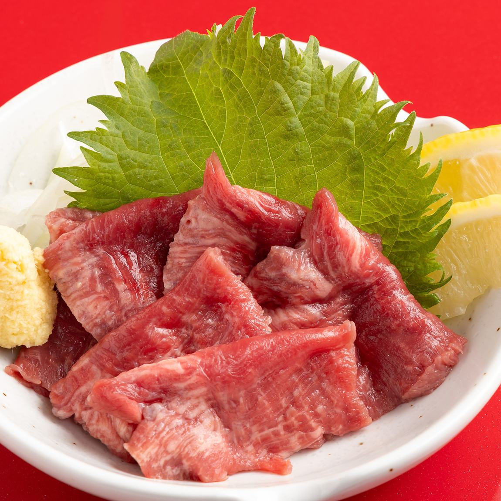
| 営業時間 | 月〜土 18:00〜翌3:00（料理L.O.翌2:30・ドリンクL.O.翌2:30）／日 17:00〜翌0:00（L.O.23:30） |
|---|---|
| 定休日 | なし |
| 住所 | 佐賀県佐賀市中央本町7-8 |
| 予約 | 予約可。電話095-229-3500、またはホットペッパーグルメのネット予約（即予約は来店日の翌0時まで、リクエスト予約は前日17時まで）。支払いは現金のみ — ☎ 0952-29-3500 |
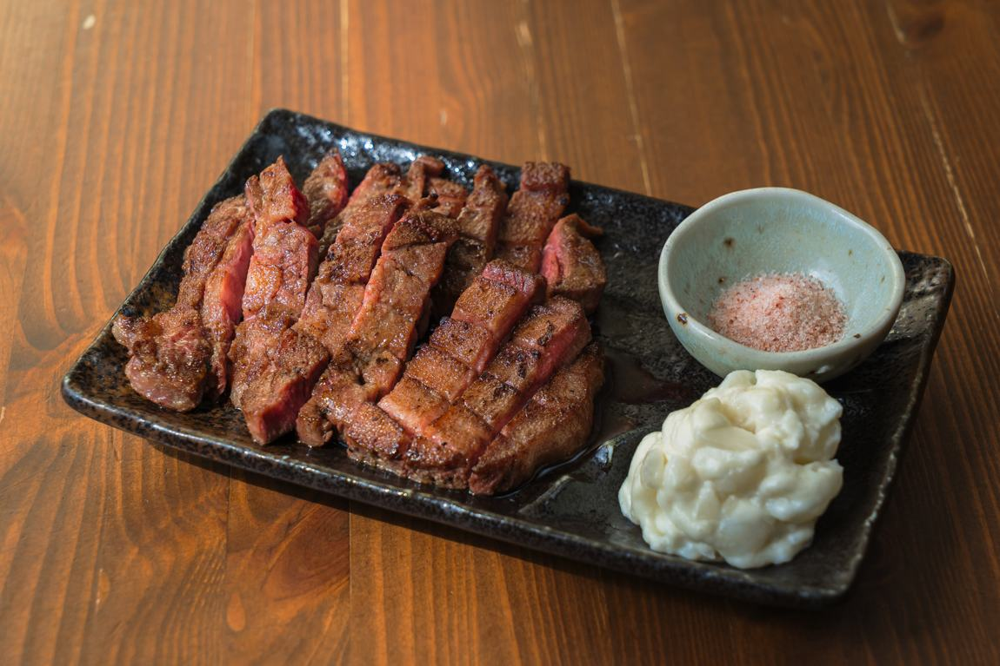
| 営業時間 | 月〜金・祝前日 11:30〜14:30／18:00〜21:00、土・日・祝 11:30〜21:00（ホットペッパーグルメの掲載。公式LINEの店舗案内は昼11:30〜15:00／夜18:00〜22:00で火・水は夜のみ、と食い違う） |
|---|---|
| 定休日 | なし（ホットペッパーグルメの掲載） |
| 住所 | 佐賀県佐賀市兵庫南2丁目736-1 |
| 予約 | ホットペッパーグルメのリクエスト予約のみ（来店日の前日17時まで）。電話は0952-97-8456 — ☎ 0952-97-8456 ／ 公式サイト |
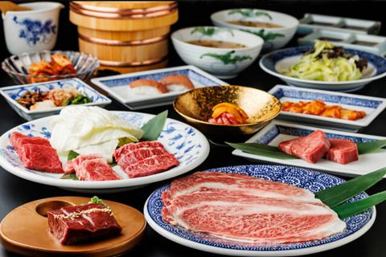
| 営業時間 | 月〜日・祝日・祝前日 11:30〜15:00（料理L.O.14:30・ドリンクL.O.14:30）／17:00〜22:00（料理L.O.21:20・ドリンクL.O.21:30） |
|---|---|
| 定休日 | なし |
| 住所 | 佐賀県佐賀市兵庫南3-3-12 |
| 予約 | 予約可。電話0952-40-0055、またはホットペッパーグルメのネット予約（即予約は来店日当日20時まで）。昼は満席になることがあるので予約が無難 — ☎ 0952-40-0055 ／ 公式サイト |
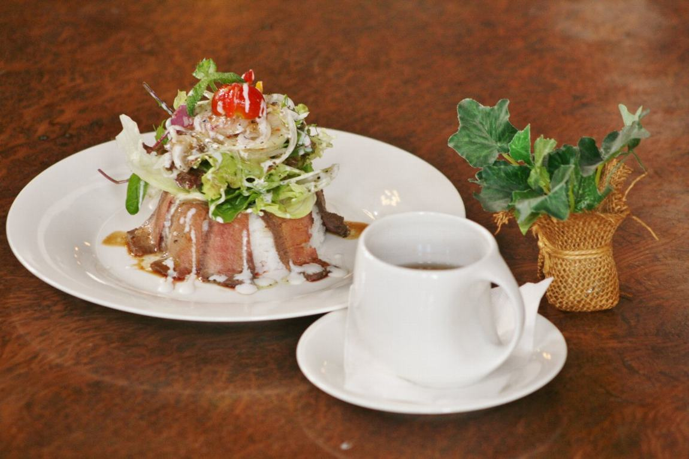
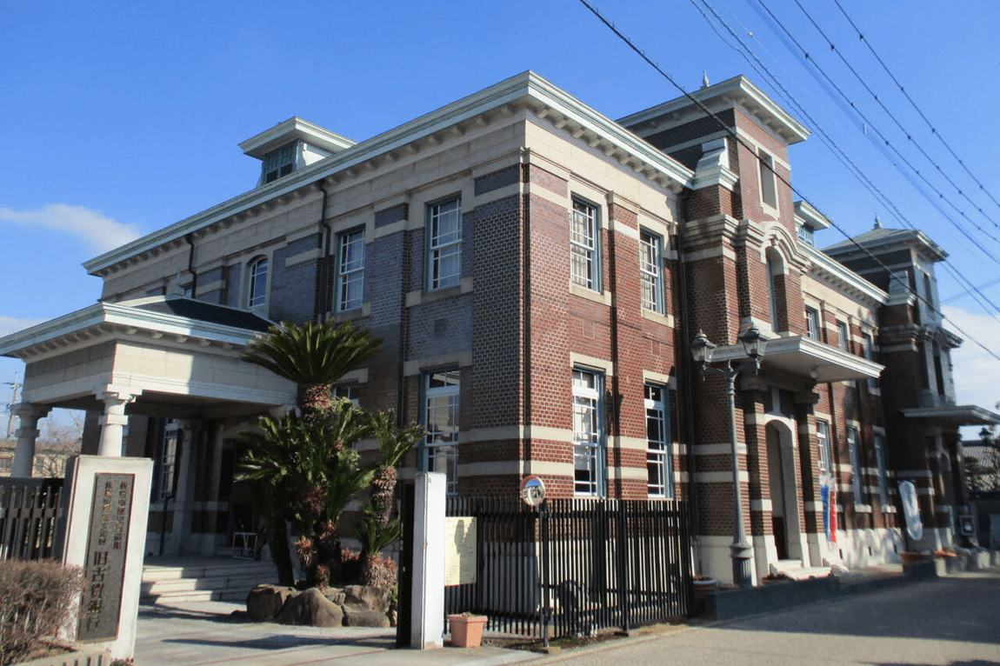
| 営業時間 | 10:00〜16:00（ランチタイム 11:30〜14:00 オーダーストップ、喫茶 10:00〜16:00 オーダーストップ） |
|---|---|
| 定休日 | 月曜日（当日が祝日の場合は火曜日）、祝日の翌日（当日が土曜日の場合は開館）、12月29日〜1月3日。佐賀市歴史民俗館の休館日と同じ |
| 住所 | 佐賀県佐賀市柳町2番9号 佐賀市歴史民俗館 旧古賀銀行内1階 |
| 予約 | 電話（0952-24-4883）で受け付ける。ネット予約は無い。コンサートなどで貸切になることがあるため、来店前の電話確認が公式に勧められている。 — ☎ 0952-24-4883 |
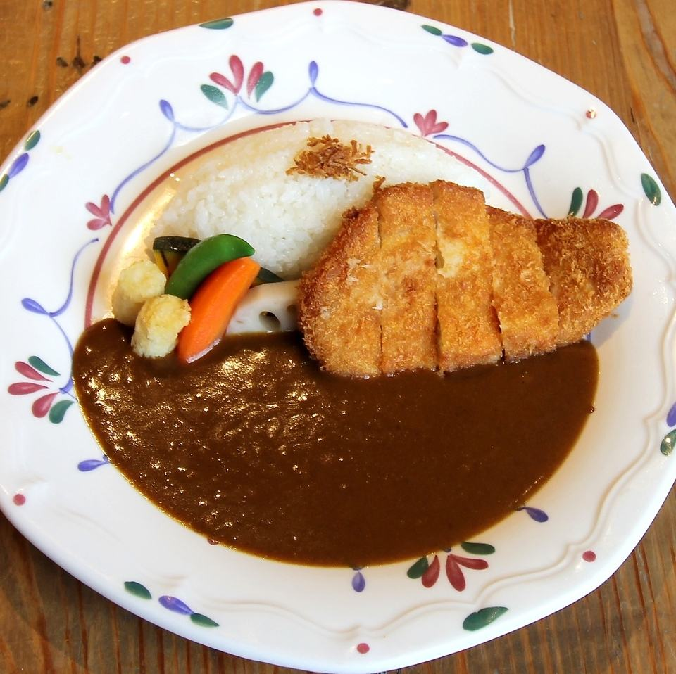
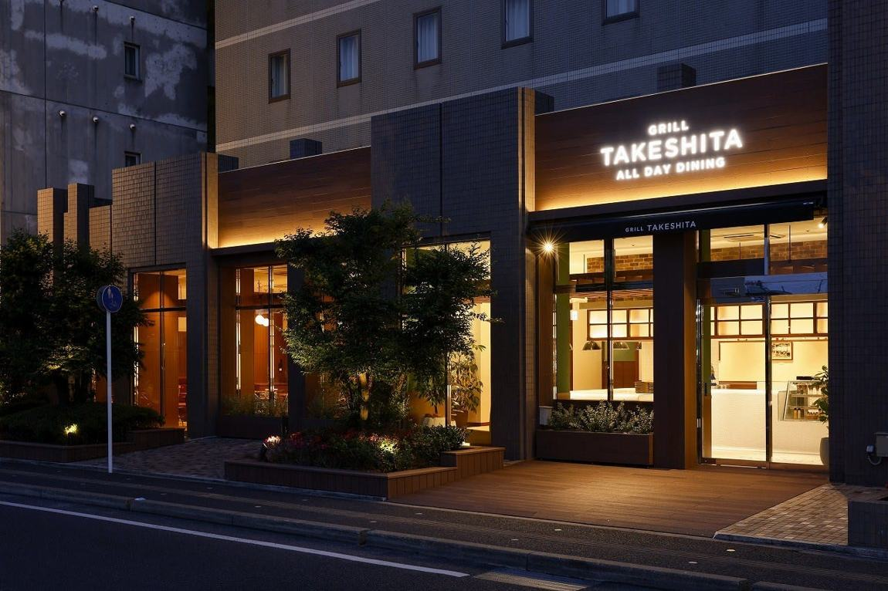
| 営業時間 | モーニング 6:30〜9:30（9:00受付終了）／ランチ 11:30〜15:00（14:00受付終了）／ディナー 17:00〜21:00（ラストオーダー20:00、土・日・祝のみ） |
|---|---|
| 定休日 | 水曜日（ほか不定休） |
| 住所 | 佐賀県佐賀市駅前中央1-164 アパホテル〈佐賀南口〉1階 |
| 予約 | 電話（0952-25-3811）のほか、ぐるなび・ホットペッパーグルメでネット予約ができる。即予約は来店日当日17時まで、リクエスト予約は3日前まで。団体は電話で受け付ける。 — ☎ 0952-25-3811 ／ 公式サイト |
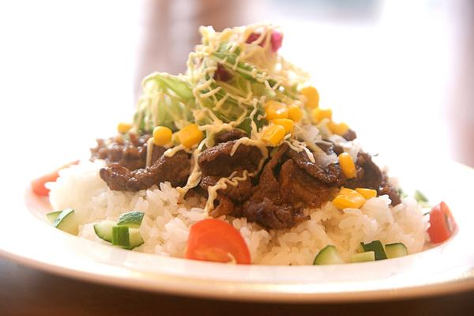
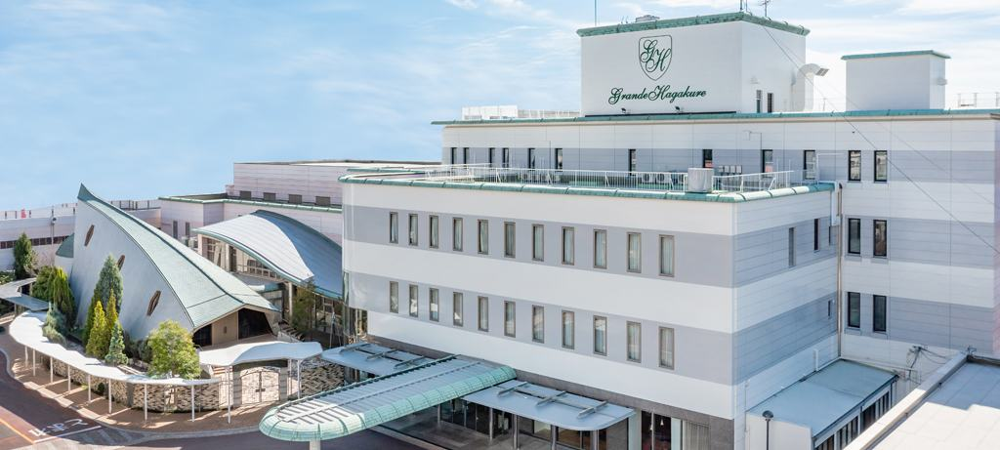
| 営業時間 | ランチ 11:30〜14:00（ラストオーダー14:00）／喫茶・軽食 14:00〜17:00／ディナー 18:00〜21:00（ラストオーダー20:00、完全予約制） |
|---|---|
| 定休日 | なし（佐賀市観光協会の掲載、［更新日：2026年7月6日］） |
| 住所 | 佐賀県佐賀市天神2丁目1番36号 ホテルグランデはがくれ1階 |
| 予約 | 前日の午前中までにフロントまたは予約課へ電話（0952-25-2212）。電話での当日予約は受け付けていない。ディナーは完全予約制。ランチは予約なしでも入れるが、予約できるのは11:30〜12:00の来店に限る。 — ☎ 0952-25-2212 ／ 公式サイト |
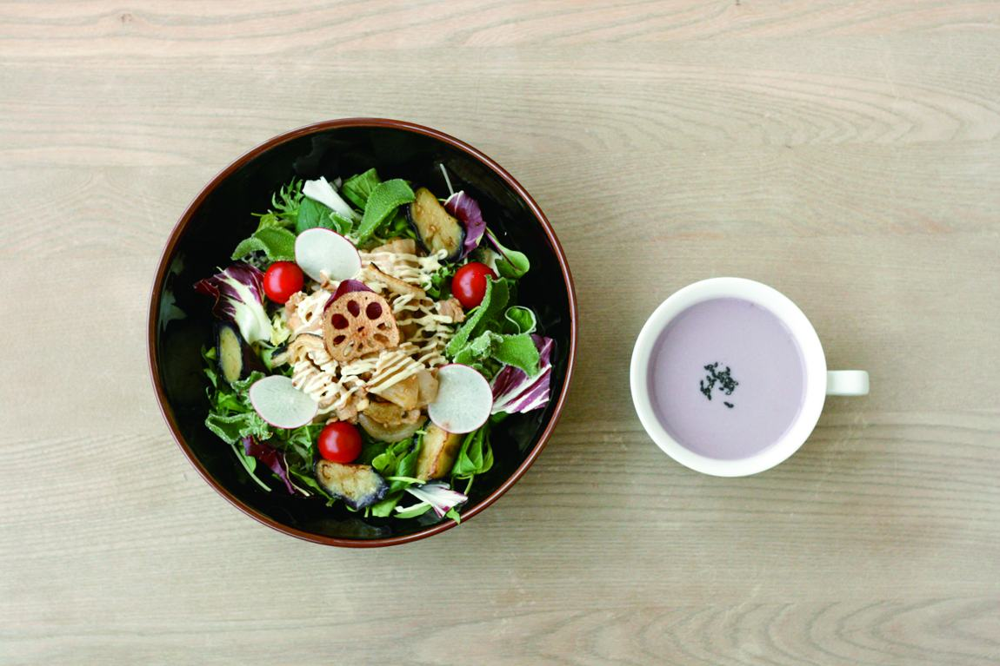
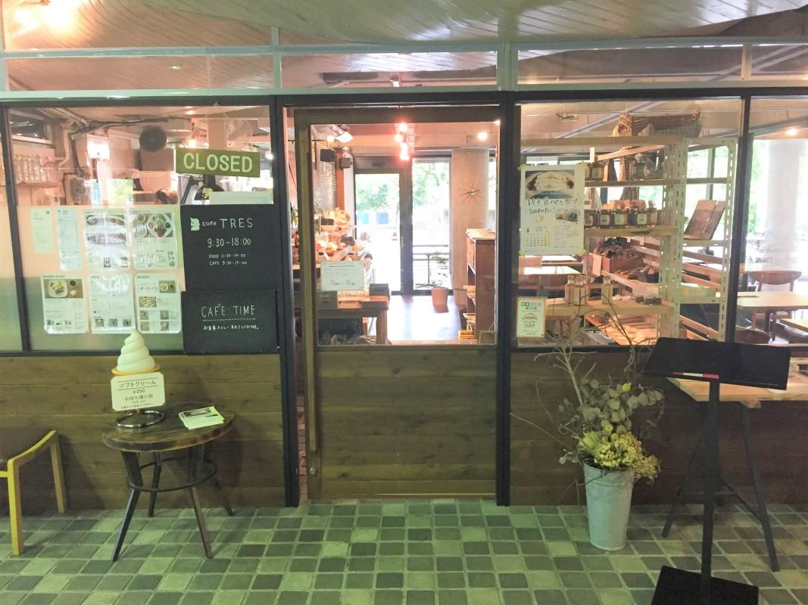
| 営業時間 | 10:00〜17:00（ラストオーダー16:30）。ランチタイム 11:30〜14:00、カフェタイム 10:00〜16:30 |
|---|---|
| 定休日 | 佐賀県立博物館の休業日と12月29日〜1月3日（佐賀県立博物館 施設案内）。佐賀市観光協会と佐賀県「さがすたいる」の掲載は「月曜日、第2・第4火曜日、博物館の休館日」。月ごとの店休日は博物館公式サイトのお知らせで告知される |
| 住所 | 佐賀県佐賀市城内1丁目15-23 佐賀県立博物館1階 |
| 予約 | 予約の可否と方法について公開されている情報が無く未確認。確かめるなら 0952-37-8402 へ。 — ☎ 0952-37-8402 ／ 公式サイト |
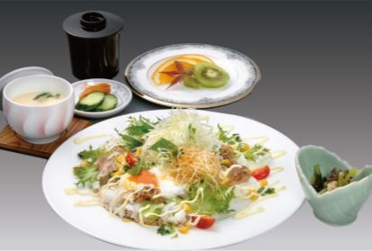
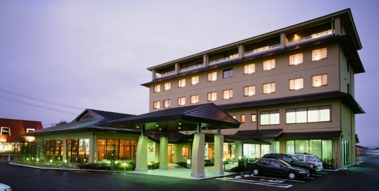
| 営業時間 | 11:30〜15:00（ラストオーダー14:00）／17:00〜22:00（ラストオーダー21:00） |
|---|---|
| 定休日 | 12月31日、ほか不定休（佐賀市観光協会の掲載、［更新日：2026年7月10日］）。2026年2月と3月は月曜日を定休日とする告知が公式サイトに出た（2026年1月13日） |
| 住所 | 佐賀県佐賀市高木瀬町東高木216-1 四季彩ホテル千代田館内 |
| 予約 | 電話（0952-32-5115）。鯛の浜焼きは要予約。宴会・会議の利用も電話で受け付ける。ホットペッパーグルメにも掲載があるがネット予約の可否は未確認。 — ☎ 0952-32-5115 ／ 公式サイト |
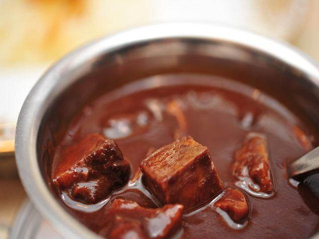
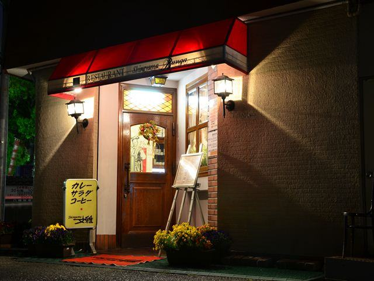
| 営業時間 | 火〜金 11:00〜14:30（ラストオーダー）／土・日・祝 11:00〜15:00（ラストオーダー）／夜は火〜日・祝 17:30〜20:00（ラストオーダー） |
|---|---|
| 定休日 | 月曜日（祝日の場合は翌日）。木曜は夜の部のみ休み |
| 住所 | 佐賀県佐賀市白山1-2-1 |
| 予約 | 電話（0952-23-4789）。コース（カレーパーティーなど）と持ち帰りの注文も同じ番号で受け付ける。繁忙時は弁当の注文に時間がかかる。 — ☎ 0952-23-4789 ／ 公式サイト |
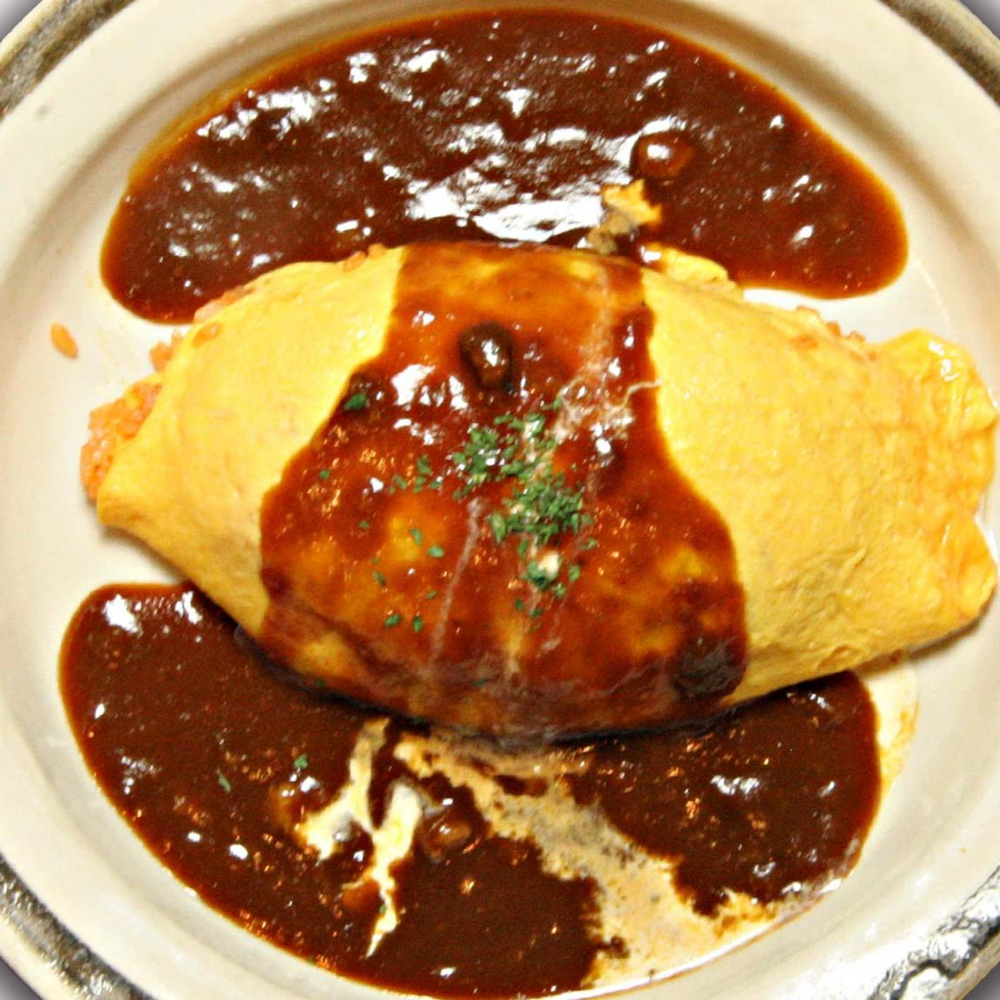
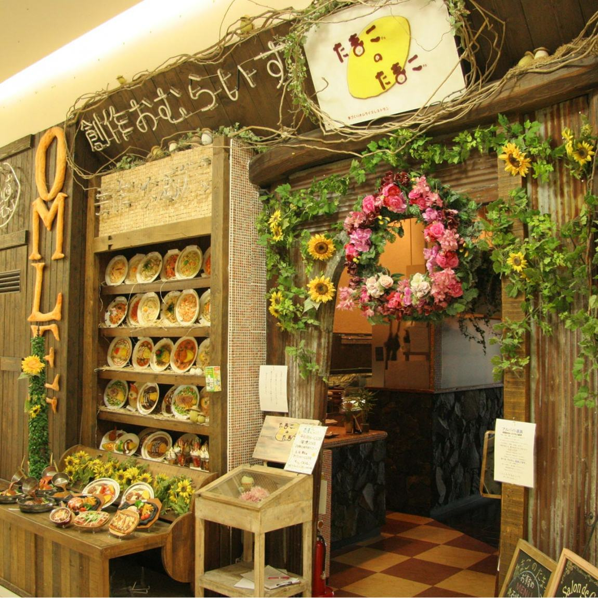
| 営業時間 | 月〜日・祝日・祝前日 11:00〜22:00（料理ラストオーダー21:30／ドリンクラストオーダー21:30） |
|---|---|
| 定休日 | 不定休（モラージュ佐賀の営業に準じる） |
| 住所 | 佐賀県佐賀市巨勢町牛島730番地115 モラージュ佐賀 北館1階 |
| 予約 | 電話（0952-41-6033、受付は11:00〜22:00）。ホットペッパーグルメにも掲載がある。 — ☎ 0952-41-6033 ／ 公式サイト |
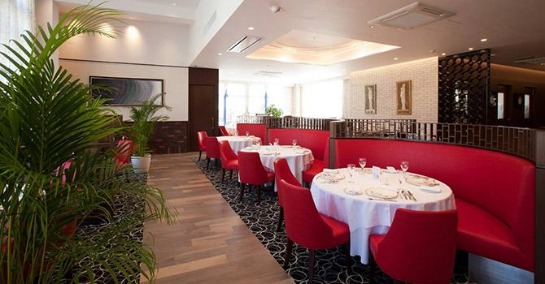
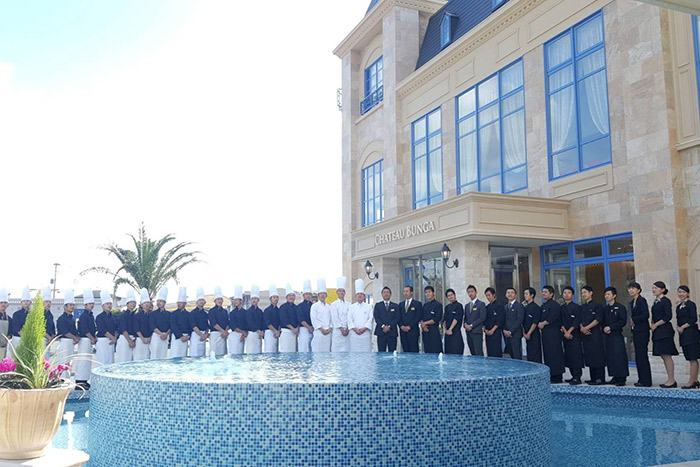
| 営業時間 | ランチ 11:30〜15:30（ラストオーダー14:30）／ディナー 17:30〜21:30（ラストオーダー20:00） |
|---|---|
| 定休日 | 毎週月曜日・火曜日（祝日の場合は翌日に振替） |
| 住所 | 佐賀県佐賀市大和町久池井2592-1 |
| 予約 | 電話（0952-62-5444）。コースは前日までの完全予約制で、シェフおまかせコースや会席仕立ての内容は3日前まで。フレンチ鉄板を頼むときは予約時にその旨を伝える。 — ☎ 0952-62-5444 ／ 公式サイト |
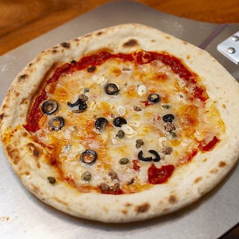
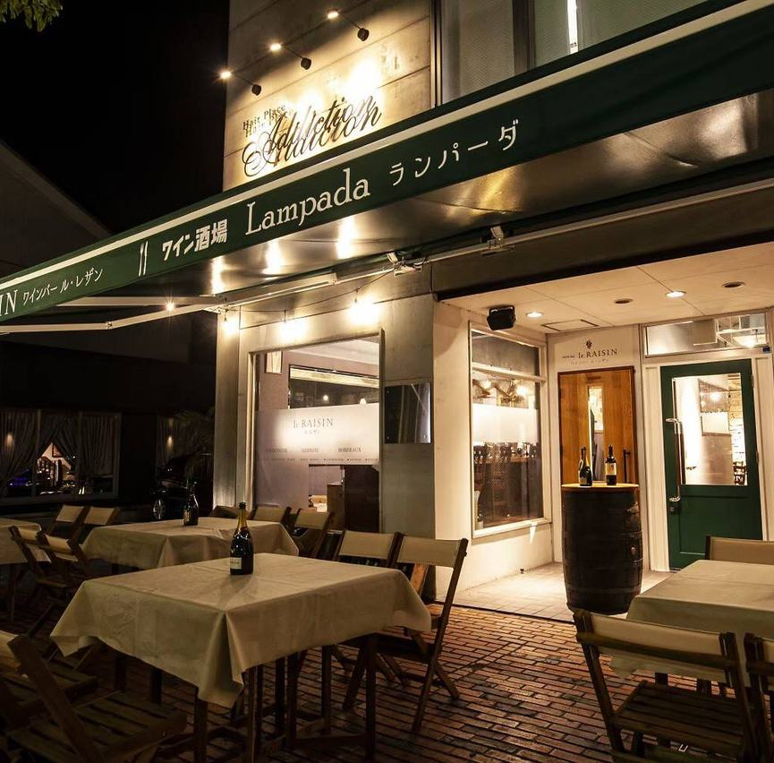
| 営業時間 | 月〜土・祝日・祝前日 18:00〜翌0:00（料理ラストオーダー23:00／ドリンクラストオーダー23:30） |
|---|---|
| 定休日 | 日曜日（祝前日の日曜は通常営業し、翌月曜が店休日になる） |
| 住所 | 佐賀県佐賀市唐人2-2-14 |
| 予約 | 電話（0952-27-8641、問い合わせは営業日の16時以降）のほか、公式サイトとホットペッパーグルメでネット予約ができる。当日0時以降のキャンセルはキャンセル料がかかる。 — ☎ 0952-27-8641 ／ 公式サイト |
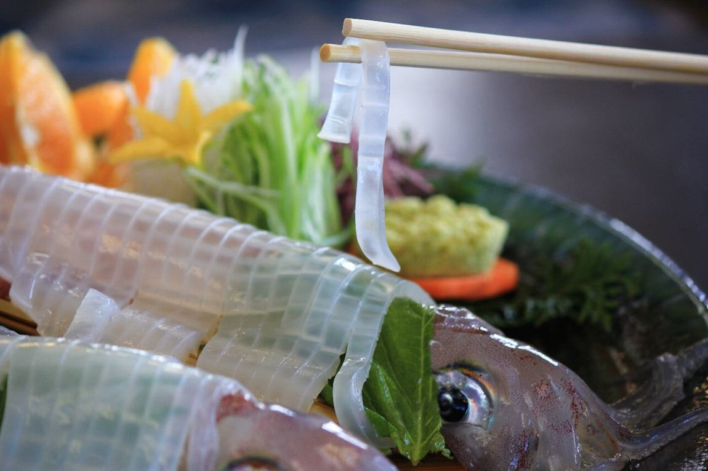
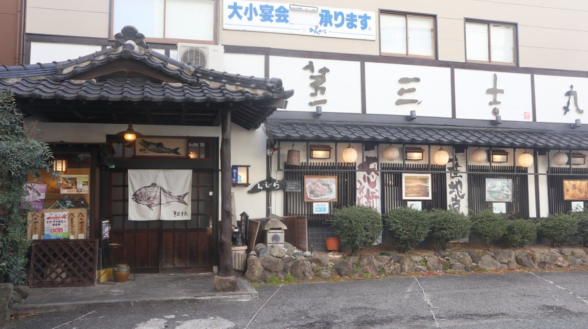
| 営業時間 | 月〜金・土・祝・祝前日 17:00〜24:00（L.O.23:30）（公式サイト）。※佐賀市公式の一覧（2026年5月25日更新）は「平日11:30〜14:00／17:00〜23:30、土日祝17:00〜23:30」としており食い違う |
|---|---|
| 定休日 | 毎週日曜日（20名以上の予約に限り営業）。年末年始は12/30〜1/2休、1/3営業、1/4休、1/5から通常営業。※佐賀市公式の一覧（2026年5月25日更新）は「第1・3・5日曜日」としている |
| 住所 | 佐賀県佐賀市神野東2丁目4-55 |
| 予約 | 可。電話 0952-33-5334、または公式サイトのネット予約。宴会は最大80名まで — ☎ 0952-33-5334 ／ 公式サイト |
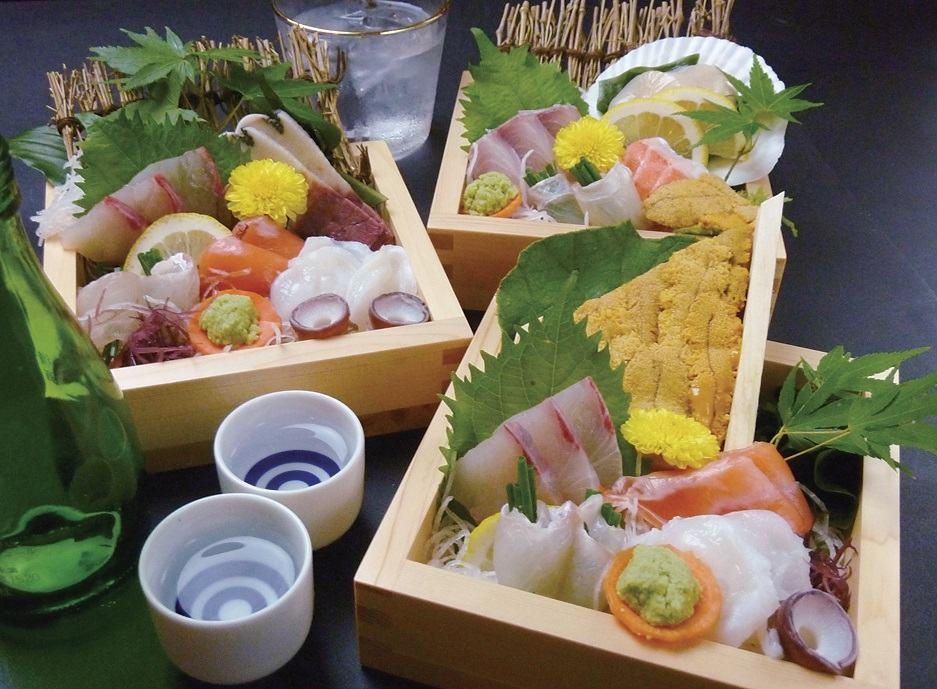
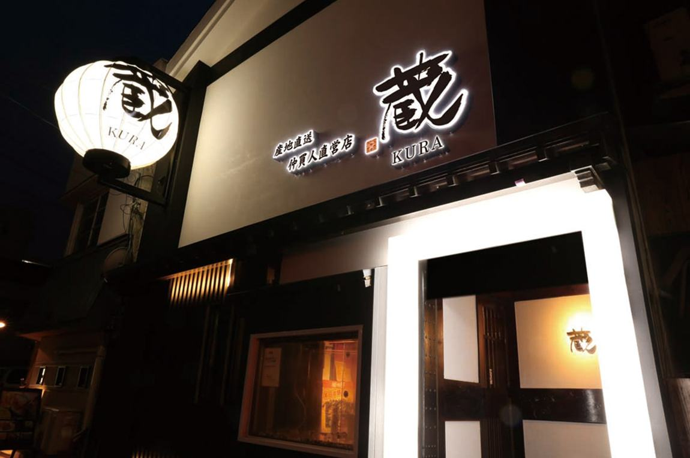
| 営業時間 | 月〜木 15:00〜24:00（料理L.O.23:00、ドリンクL.O.23:30）／金・土・祝前日 15:00〜翌2:00（料理L.O.翌1:00、ドリンクL.O.翌1:30） |
|---|---|
| 定休日 | 日曜日（祝前日の場合は営業し翌月曜休み）。※佐賀市公式の一覧（2026年5月25日更新）は「不定休」としている |
| 住所 | 佐賀県佐賀市大財1丁目3-19 |
| 予約 | 可。電話 0952-24-3030。公式ページ（kura-sagashi.gorp.jp）からネット予約もできる — ☎ 0952-24-3030 ／ 公式サイト |
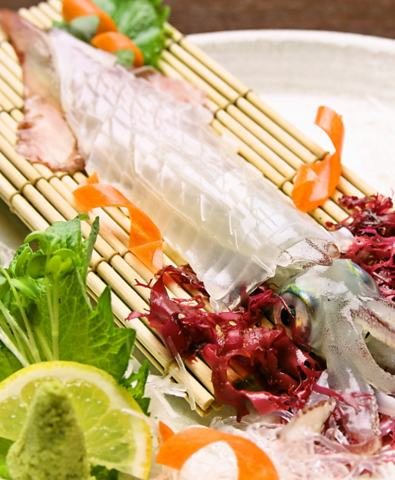
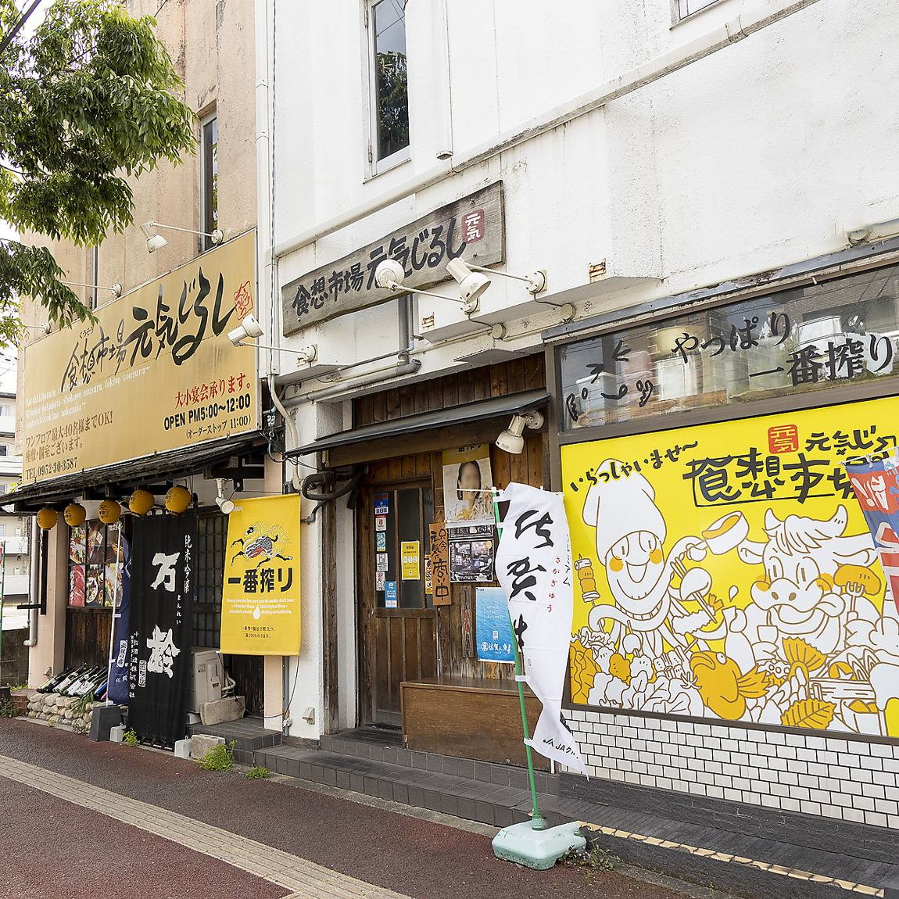
| 営業時間 | 月〜土・祝日・祝前日 17:00〜23:00（料理L.O.22:00、ドリンクL.O.22:30）（ホットペッパーグルメ 2026/10/30更新）。※佐賀市観光協会（2026年7月8日更新）と佐賀市公式の一覧（2026年5月25日更新）は「17:00〜24:00（オーダーストップ23:00）」としており食い違う |
|---|---|
| 定休日 | 日曜（日曜が祝日のときは月曜休み） |
| 住所 | 佐賀県佐賀市神野東3丁目1-46 |
| 予約 | 可。電話 0952-30-3587（問い合わせ16:00〜22:00）、またはホットペッパーグルメのネット予約（即予約は来店前日22時まで）。公式サイトは見当たらないため website は空 — ☎ 0952-30-3587 |
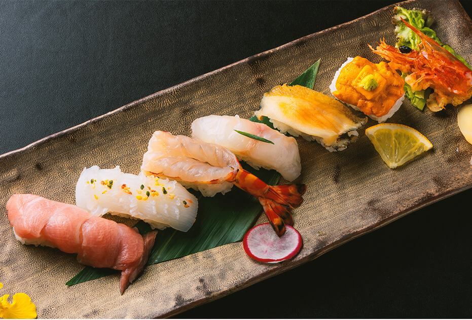
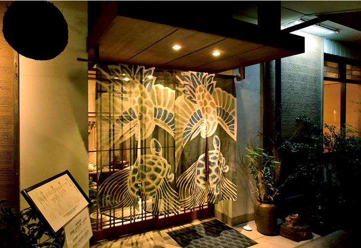
| 営業時間 | 【昼】11:00〜14:30（オーダーストップ14:00）【夜】17:00〜21:30閉店（オーダーストップ21:00）。出前宅配は11:00〜21:00（受付10:00〜20:00） |
|---|---|
| 定休日 | 月曜日・火曜日（祝日は除く）（公式サイト）。※佐賀市公式の一覧（2026年5月25日更新）は「月曜日」、ホットペッパー（2020/03/12更新）は「なし」としており食い違う |
| 住所 | 佐賀県佐賀市若宮1-7-30 |
| 予約 | 可。フリーダイヤル 0120-30-1469（携帯電話からも可）か 0952-30-1469、または公式サイトのWEB予約。慶事・会席は要予約 — ☎ 0952-30-1469 ／ 公式サイト |
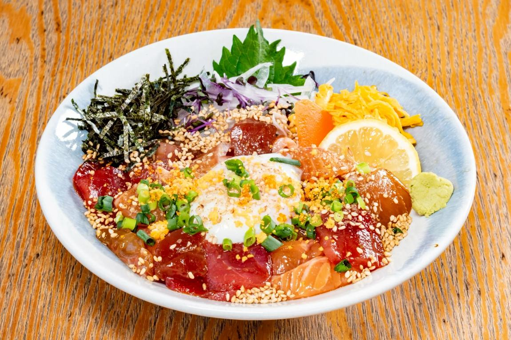
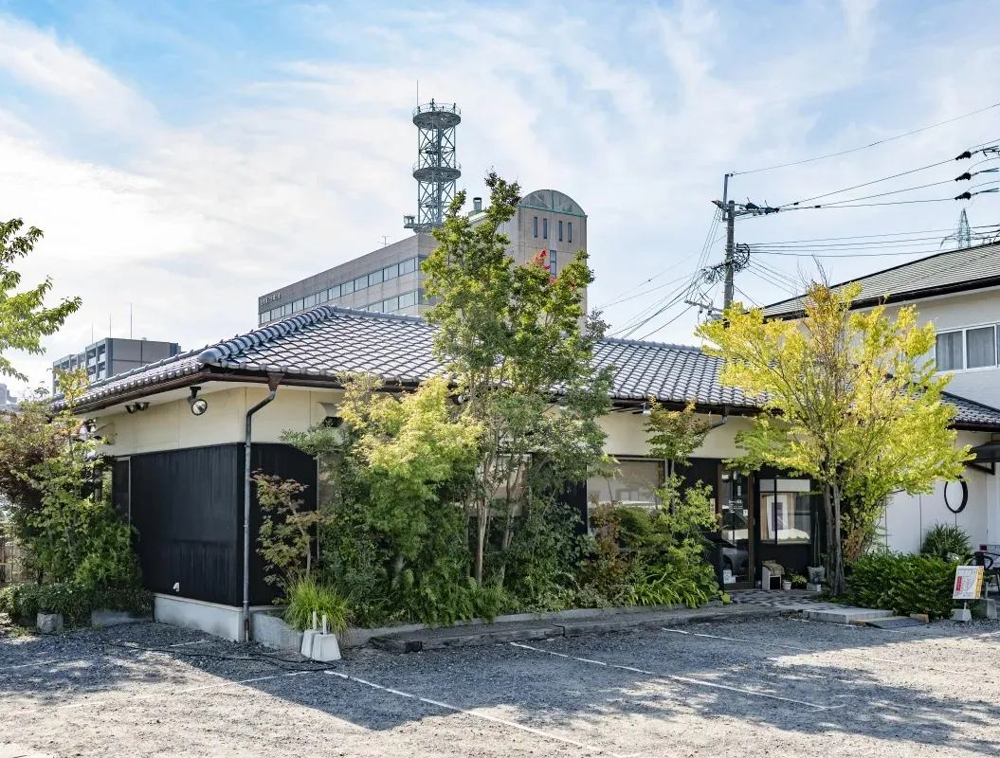
| 営業時間 | 【火・水・木】昼 11:00〜15:00（L.O.14:30）【金・土・日】昼 11:00〜14:30（L.O.14:00）／夜 17:30〜21:00（L.O.20:30）（公式サイト）。※ホットペッパーグルメ（2024/04/16更新）は「火〜木・祝前日 11:00〜15:00／金〜日・祝 11:00〜15:00、17:00〜20:00」としており食い違う |
|---|---|
| 定休日 | 月曜日（祝祭日の場合は要問い合わせ） |
| 住所 | 佐賀県佐賀市駅前中央3丁目2-21 |
| 予約 | 可。電話 0952-37-9535。宴会・コース（4,400円〜）は要相談・要予約 — ☎ 0952-37-9535 ／ 公式サイト |
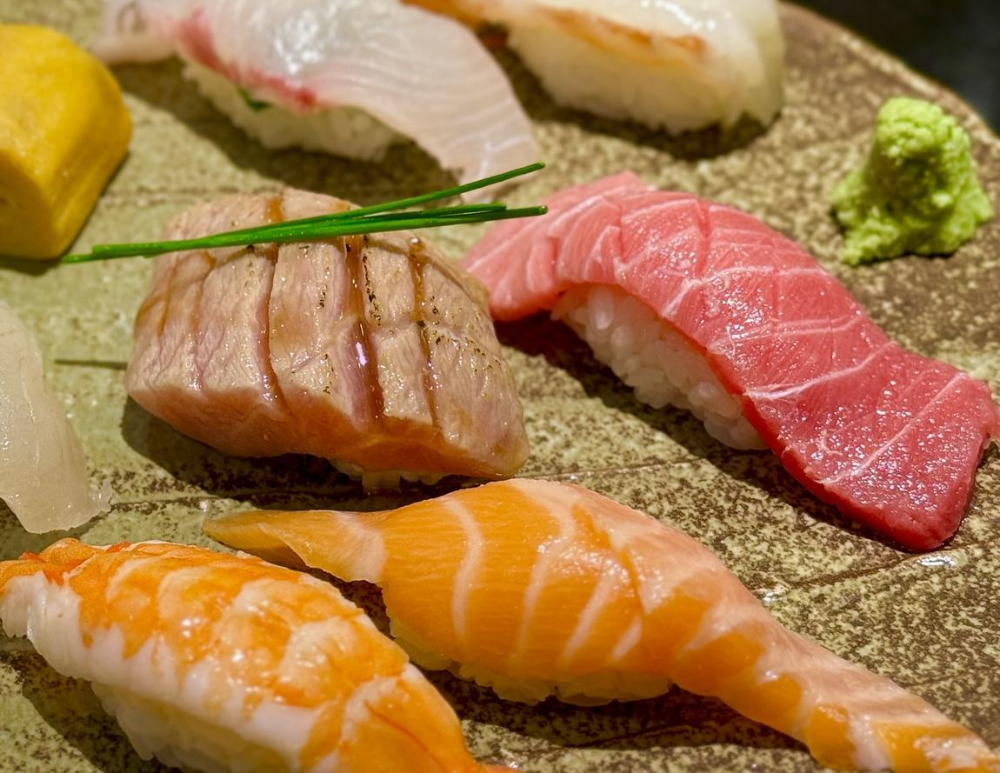
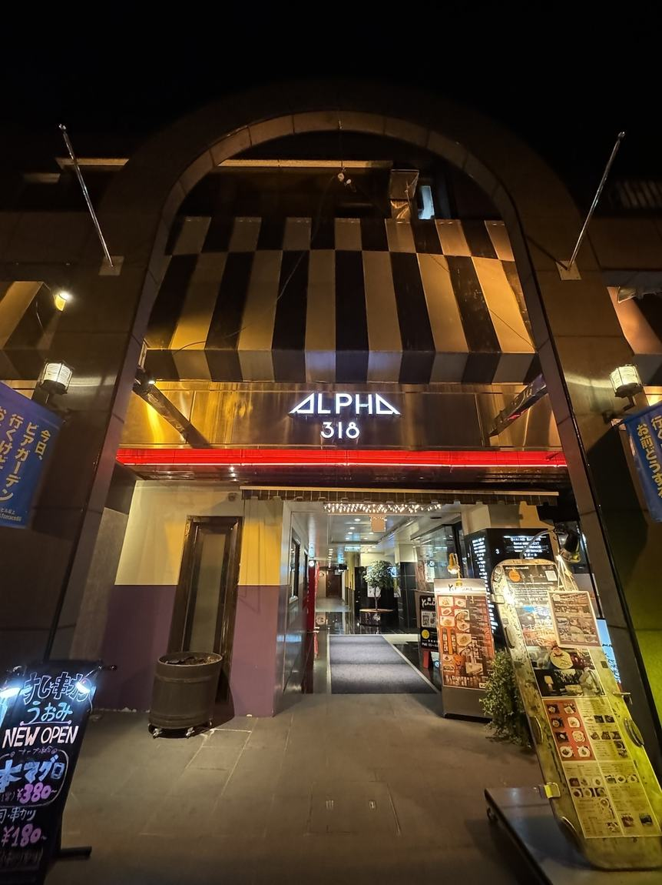
| 営業時間 | 月〜土・祝日・祝前日 18:00〜翌3:00（料理L.O.翌2:30、ドリンクL.O.翌2:30） |
|---|---|
| 定休日 | 日曜（翌日が祝日の場合は営業） |
| 住所 | 佐賀県佐賀市中央本町3-18 アルファ318ビル1階 |
| 予約 | 可。電話 080-4365-5375、またはホットペッパーグルメのネット予約（即予約は来店当日21時まで、リクエスト予約は前日17時まで）。公式サイトは見当たらないため website は空 — ☎ 080-4365-5375 |
| 営業時間 | 月〜日・祝日・祝前日 11:30〜14:00／17:00〜22:00 |
|---|---|
| 定休日 | 不定休 |
| 住所 | 佐賀県佐賀市久保田町徳万499-1 |
| 予約 | コースは完全予約制。電話 0952-68-2063、またはホットペッパーグルメのネット予約（即予約・リクエスト予約とも来店前日17時まで）。公式サイトは現在404のため website は空 — ☎ 0952-68-2063 |
| 営業時間 | 11:00〜20:30（鰻次第、20時オーダーストップ） |
|---|---|
| 定休日 | 水曜日ほか（祝日の場合は営業）。臨時の店休日は公式サイトの店舗カレンダーに載る |
| 住所 | 佐賀県佐賀市本庄町大字末次394-7 |
| 予約 | 電話 0952-28-9160 で可。うなぎづくしコース（8,200円）は要予約。出前の注文は 0952-24-3681 — ☎ 0952-28-9160 ／ 公式サイト |
| 営業時間 | 11:00〜14:30／17:00〜21:00（公式サイト）。※ホットペッパーグルメ（2026/10/16更新）は「月〜日・祝日・祝前日 11:00〜14:00／17:00〜21:00（料理L.O.20:30、ドリンクL.O.20:30）」としており食い違う |
|---|---|
| 定休日 | 不定休 |
| 住所 | 佐賀県佐賀市下田町1-15 |
| 予約 | 可。電話 0952-23-5115、公式サイトまたはホットペッパーグルメのネット予約（即予約は来店前日11時まで、リクエスト予約は前日17時まで）。コース予約は当日0時以降のキャンセルで100%の料金が発生する — ☎ 0952-23-5115 ／ 公式サイト |
| 営業時間 | 11:00〜22:00（公式サイト） |
|---|---|
| 定休日 | なし（ホットペッパーグルメの掲載。公式サイトに定休日の記載は無い） |
| 住所 | 佐賀県佐賀市兵庫南2-14-1 |
| 予約 | 予約についての記載は公式サイト・ホットペッパーグルメのいずれにも無く、ネット予約は受け付けていない。問い合わせは電話0952-27-9250 — ☎ 0952-27-9250 ／ 公式サイト |
| 営業時間 | |
|---|---|
| 定休日 | |
| 住所 | 佐賀県佐賀市大和町大字尼寺3650-1 |
| 予約 | 予約の可否は公式サイトに記載が無い。ホットペッパーグルメの掲載はネット予約を受け付けていない。問い合わせは電話0952-62-8181 — ☎ 0952-62-8181 ／ 公式サイト |
| 営業時間 | 月曜 11:00〜20:00（料理L.O.19:30）／火〜日・祝日・祝前日 11:00〜翌3:00（料理L.O.翌2:30）※いずれも15:00〜17:00は準備休業 |
|---|---|
| 定休日 | なし |
| 住所 | 佐賀県佐賀市大財5-12-1 |
| 予約 | ネット予約は受け付けていない。問い合わせは電話0952-28-6129（受付11:00〜翌3:00） — ☎ 0952-28-6129 ／ 公式サイト |
| 営業時間 | 月・火・木〜日・祝日・祝前日 11:00〜20:00（料理L.O.19:30）※15:00〜17:00は準備休業 |
|---|---|
| 定休日 | 水曜 |
| 住所 | 佐賀県佐賀市兵庫町若宮219-2 |
| 予約 | 券売機での食券制で予約は不要。ネット予約は受け付けていない。問い合わせは電話0952-24-6371（受付11:00〜20:00） — ☎ 0952-24-6371 ／ 公式サイト |
| 営業時間 | 11:00〜17:00 |
|---|---|
| 定休日 | 水曜 |
| 住所 | 佐賀県佐賀市富士町大字上合瀬453-1 |
| 予約 | 予約についての記載は公式サイトに無い。問い合わせは電話0952-57-2873 — ☎ 0952-57-2873 ／ 公式サイト |
| 営業時間 | 11:00〜15:00 |
|---|---|
| 定休日 | 木曜・土曜・日曜（佐賀県「SAGAラーメン」店舗一覧）。同県の「後世に残したい店」の掲載は水曜・日曜で食い違うため要確認 |
| 住所 | 佐賀県佐賀市若楠2-6-24 |
| 予約 | 予約は受け付けていない（カウンター中心の店。佐賀県の掲載にも予約の記載は無い）。問い合わせは電話0952-33-1688 — ☎ 0952-33-1688 |
| 営業時間 | 11:00〜15:00／19:00〜22:00 |
|---|---|
| 定休日 | 日曜（月曜が祝日の場合は日曜に営業し、月曜が休み） |
| 住所 | 佐賀県佐賀市駅前中央1-13-16 |
| 予約 | 予約は受け付けていない（コの字カウンターのみの店）。問い合わせは電話0952-30-8212 — ☎ 0952-30-8212 |
| 営業時間 | 平日 11:00〜15:00／土 11:00〜16:00（佐賀県「さがすたいる」店舗ページ。佐賀県「SAGAラーメン」店舗一覧と公式note の表記は11:00〜15:00） |
|---|---|
| 定休日 | 日曜日・第3月曜日（佐賀県「さがすたいる」店舗ページ。公式note と店舗一覧は「日曜」のみ記載） |
| 住所 | 佐賀県佐賀市下田町3-31 |
| 予約 | 予約についての記載は公的機関のページにも無い。券売機で食券を買う現金のみの店で、混雑時は名前を書いて待つ。問い合わせは電話0952-24-5084 — ☎ 0952-24-5084 |
| 営業時間 | 月〜土・祝日・祝前日 18:00〜翌2:00（料理L.O.翌1:00／ドリンクL.O.翌1:00）、日 18:00〜23:00（料理L.O.22:00／ドリンクL.O.22:00） |
|---|---|
| 定休日 | 不定休 |
| 住所 | 佐賀県佐賀市白山2-1-4 |
| 予約 | 予約可。電話0952-24-3477（問い合わせ時間16:00〜ラストオーダー）。ホットペッパーグルメのネット予約は即予約が来店日の前日22時まで、リクエスト予約が来店日の3日前まで — ☎ 0952-24-3477 |
| 営業時間 | 月〜木・祝日 18:00〜翌0:00（料理L.O.23:30／ドリンクL.O.23:30）、金・土・祝前日 18:00〜翌2:00（料理L.O.翌1:00／ドリンクL.O.翌1:00） |
|---|---|
| 定休日 | 日曜 |
| 住所 | 佐賀県佐賀市大財1-3-15 |
| 予約 | 予約可。電話0952-22-4231（問い合わせ17:30〜24:00）。ホットペッパーグルメのネット予約は即予約が来店日の翌0時まで、リクエスト予約が来店日の3日前まで。コース予約は来店当日16時以降のキャンセルでコース料金の100%、人数変更は1名につき50% — ☎ 0952-22-4231 ／ 公式サイト |
| 営業時間 | 月〜木・日・祝日 17:00〜翌0:00（料理L.O.23:00／ドリンクL.O.23:30）、金・土・祝前日 17:00〜翌1:00（料理L.O.翌0:00／ドリンクL.O.翌0:30） |
|---|---|
| 定休日 | ホットペッパーグルメの定休日欄は「-」で記載がない。休みの有無は電話で確認が必要 |
| 住所 | 佐賀県佐賀市駅前中央1丁目13-23 |
| 予約 | 予約可。電話0952-37-1330。ホットペッパーグルメのネット予約は即予約が来店日の当日21時まで、リクエスト予約が前日17時まで — ☎ 0952-37-1330 |
| 営業時間 | 月〜日・祝日・祝前日 17:00〜翌0:00（料理L.O.23:00／ドリンクL.O.23:00） |
|---|---|
| 定休日 | 不定休 |
| 住所 | 佐賀県佐賀市鍋島町八戸溝157-1 |
| 予約 | 予約可。電話0952-20-4048。公式サイトとホットペッパーグルメからネット予約でき、即予約は来店日の当日17時まで、リクエスト予約は前日17時まで — ☎ 0952-20-4048 ／ 公式サイト |
| 営業時間 | 水〜土 18:00〜23:00、日 18:00〜22:30（公式サイト）。ホットペッパーグルメの掲載は水〜日 18:00〜23:00（料理L.O.22:00／ドリンクL.O.22:30、日曜のドリンクL.O.は要電話確認） |
|---|---|
| 定休日 | 月曜・火曜 |
| 住所 | 佐賀県佐賀市大和町大字尼寺2861-5 |
| 予約 | 予約可。電話080-3228-1932。公式サイトからホットペッパーグルメ・食べログ・ぐるなびのネット予約へ進める。ホットペッパーの即予約は来店日の当日18時まで、リクエスト予約は前日17時まで。宴会コース（8〜20名）や貸切の相談は電話 — ☎ 080-3228-1932 ／ 公式サイト |
| 営業時間 | 月〜日・祝日・祝前日 17:00〜翌0:00（料理L.O.23:00／ドリンクL.O.23:00） |
|---|---|
| 定休日 | なし |
| 住所 | 佐賀県佐賀市駅南本町5-5 サンシャインM 1階 |
| 予約 | 予約可。電話0952-25-1550。ホットペッパーグルメのネット予約（即予約）は来店日の当日20時まで — ☎ 0952-25-1550 |
| 営業時間 | 月〜日・祝日・祝前日 17:30〜翌0:00（料理L.O.23:30／ドリンクL.O.23:50） |
|---|---|
| 定休日 | 不定休（年末年始は12/30・12/31・1/1が休み） |
| 住所 | 佐賀県佐賀市本庄町本庄455-40 |
| 予約 | 予約可。電話0952-65-1989。ホットペッパーグルメのネット予約はリクエスト予約のみで来店日の3日前まで（即予約の扱いはない） — ☎ 0952-65-1989 |
| 営業時間 | 昼の部 11:30〜14:30（料理L.O.14:00／最終入店13:30）、夜の部 17:00〜22:00（料理L.O.21:00／最終入店20:30）。ホットペッパーグルメの掲載はドリンクL.O.21:30 |
|---|---|
| 定休日 | 月曜（月曜が祝日の場合は火曜）＝公式サイト。ホットペッパーグルメの掲載はこれに加えて第1火曜日 |
| 住所 | 佐賀県佐賀市大和町尼寺3338-7 |
| 予約 | 予約可。電話0952-62-8171（問い合わせ10:30〜22:00）。公式サイトからネット予約（reserve.toretaasia.com）。ホットペッパーグルメの即予約は来店日の当日14時まで。コース予約は来店当日17時以降のキャンセルでコース料金の50% — ☎ 0952-62-8171 ／ 公式サイト |
| 営業時間 | 11:30〜20:30（19:30 オーダーストップ） |
|---|---|
| 定休日 | 日曜、第1日曜に続く月曜 |
| 住所 | 佐賀県佐賀市巨勢町牛島576-37 |
| 予約 | ネット予約は受け付けていない（ホットペッパーグルメ）。問い合わせは電話0952-22-2522（受付11:30〜21:00） — ☎ 0952-22-2522 |
| 営業時間 | 火・水・金 11:00〜18:00／土日祝 10:00〜18:00 |
|---|---|
| 定休日 | 月曜・木曜（祝日に当たるときは営業） |
| 住所 | 佐賀県佐賀市唐人1-1-12 |
| 予約 | 1階の喫茶は予約不要。2階の和室・会議室は専用アプリで1時間から予約できる。問い合わせは公式LINEまたは電話090-4440-2584 — ☎ 090-4440-2584 ／ 公式サイト |
| 営業時間 | 平日 12:00〜18:00／土日祝 11:00〜18:00 |
|---|---|
| 定休日 | 木曜（不定休あり） |
| 住所 | 佐賀県佐賀市唐人2-4-2 1F |
| 予約 | 席の予約は受け付けていない。入ってすぐのカウンターで先に注文・会計する。フードとドリンク（アルコールを除く）は持ち帰りができ、電話070-4111-7328またはLINE公式アカウントで事前に注文できる — ☎ 070-4111-7328 ／ 公式サイト |
| 営業時間 | 8:00〜17:00（売り切れ次第終了。佐賀市観光協会 2026年7月6日更新）。ホットペッパーグルメの掲載は月〜土8:00〜17:00、日・祝8:00〜18:00（2026-11-21 取得） |
|---|---|
| 定休日 | 第2・4・5水曜日、大晦日、元旦（公式サイト） |
| 住所 | 佐賀県佐賀市大和町大字梅野173 |
| 予約 | 喫茶の予約についての記載は公式サイトに無い。2階の貸しスペースは要問い合わせ（平日9時〜17時3,000円＋税／土日祝1日5,000円＋税）。問い合わせは電話0952-62-0235 — ☎ 0952-62-0235 ／ 公式サイト |
| 営業時間 | 14:00〜24:00 |
|---|---|
| 定休日 | 日曜日・元旦（公式サイトのトップは「日曜日・不定休」とも記載） |
| 住所 | 佐賀県佐賀市大財1-5-60 |
| 予約 | 通常の喫茶は予約不要。ライブは公式サイトの最新情報を確認のうえ電話0952-28-6708へ。二次会・パーティーの貸切は要相談（カウンター席を含め40席） — ☎ 0952-28-6708 ／ 公式サイト |
| 営業時間 | 本店 9:00〜18:00／羊羹資料館 9:00〜17:00（1月1日は11:00〜18:00） |
|---|---|
| 定休日 | 羊羹資料館は定休日なし（佐賀県観光連盟「あそぼーさが」）。小城本店の月ごとの店休日は公式サイト「店舗案内(店休日)」に掲載 |
| 住所 | 佐賀県小城市小城町861 |
| 予約 | 個人は予約不要。5名以上は3日前までに、50名以上の団体は5日前までに予約が必要（羊羹資料館 公式サイト）。連絡先は本店0952-72-2131、通販・問い合わせはフリーダイヤル0120-35-8057（午前8時〜午後5時） — ☎ 0952-72-2131 ／ 公式サイト |
| 営業時間 | 11:30〜15:00（14:30 ラストオーダー）。17:00〜21:00は1日1組限定の貸切のみ |
|---|---|
| 定休日 | 毎週月曜日・毎月最終火曜日 |
| 住所 | 佐賀県佐賀市柳町4-16（旧久富家住宅1階） |
| 予約 | 昼のカフェ・ランチは予約不要。貸切は8名以上・開催日の7日前までに公式サイトの問い合わせフォームで相談（1名4,000円から、飲食と貸切料金込み）。電話での問い合わせは10時〜16時 — ☎ 0952-37-6905 ／ 公式サイト |
本ガイドは個人利用目的で作成。掲載情報は2026年11月時点の調査に基づく。写真出典: 各店の公式サイト・公式SNS、および地域情報サイト等の掲載写真（著作権は各サイト・各撮影者に帰属）。引用元は店ごとにカード内へ明記。